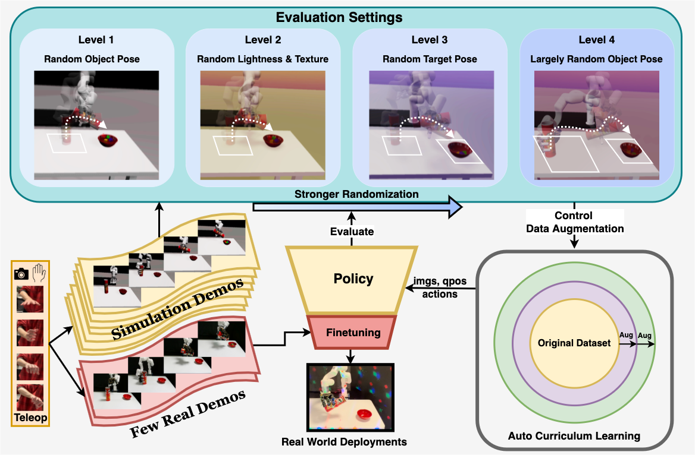

@article{wang2024cyberdemo,
author = {Wang, Jun and Qin, Yuzhe and Kuang, Kaiming and Korkmaz, Yigit and Gurumoorthy, Akhilan and Su, Hao and Wang, Xiaolong},
title = {{CyberDemo: Augmenting Simulated Human Demonstration for Real-World Dexterous Manipulation}},
journal = {arXiv preprint arXiv: 2312.09237},
year = {2024},
}